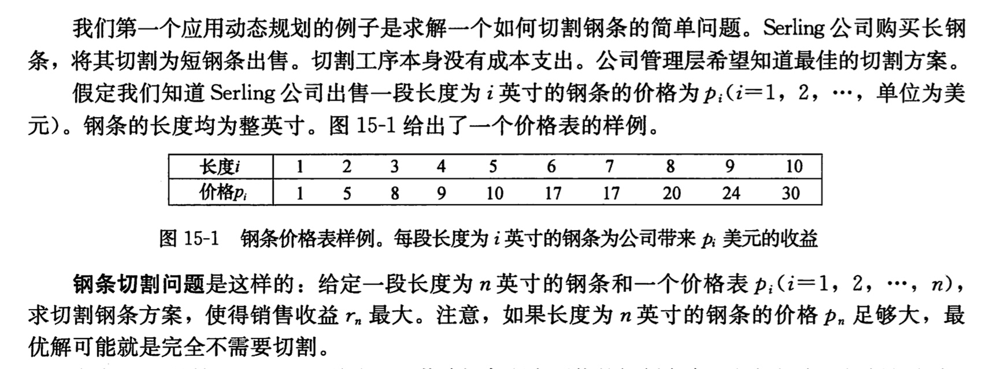
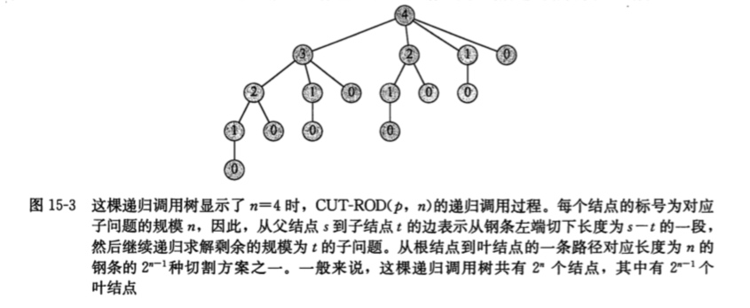
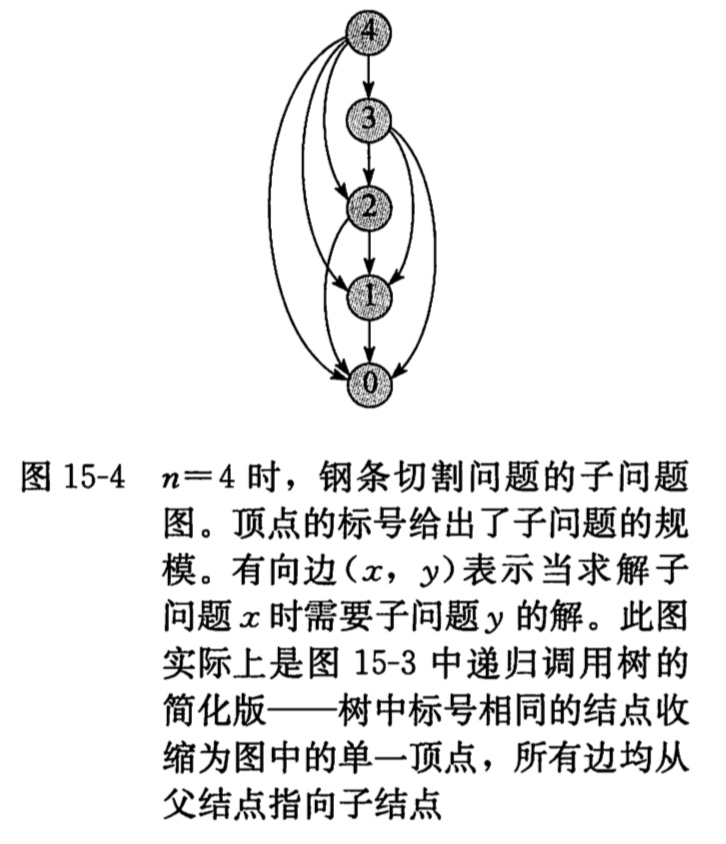

动态规划
动态规划与分治法很类似，都是通过组合子问题的解来求解原问题。但是不同的是动态规划应用于子问题重叠的情况,即不同的子问题也具有公共的子子问题。分治法在这种情况下，会反复的求解那些公共子子问题。而动态规划算法对每个子子问题只求解一遍，将其保存在一个表格中，避免每次都计算。
钢条切割问题
我们第一个动态规划问题是钢条切割问题。

分治法
我们来先看一下简答的分治法：
//
// main.m
// CUT-ROD
#import <Foundation/Foundation.h>
@interface CUT_ROD:NSObject;
-(NSInteger)CUT_ROD:(NSArray*)P length:(NSInteger)n;
@end
int main(int argc, const char * argv[]) {
@autoreleasepool {
NSArray *c = @[@1,@5,@8,@9,@10,@17,@17,@20,@24,@30];
CUT_ROD *a = [CUT_ROD new];
NSInteger result = [a CUT_ROD:c length:10];
NSLog(@"result is %ld",result);
}
return 0;
}
@implementation CUT_ROD
//简单的分治法,会重复计算子子结果
-(NSInteger)CUT_ROD:(NSArray *)P length:(NSInteger)n{
if (n==0) {
return 0;
}
NSInteger q = -1;
for (NSInteger i=0; i<n; i++) {
q = q>([P[i] integerValue]+[self CUT_ROD:P length:n-i-1]) ? q:([P[i] integerValue]+[self CUT_ROD:P length:n-i-1]);
}
return q;
}
@end
上述代码使用递归来实现的，但是每次都要递归的重复来计算相同的子子问题，如图所示：

所以我们就在想，只要把求解得到的子子问题答案记录下，等到下次要用的时候直接调用它，就可以省下大量的时间。所以我们下面采用动态规划来写一遍。
动态规划
动态规划是一个典型的时空权衡的例子，付出额外的内存空间来降低计算时间。
第一种方法：带备忘的自顶向下算法
//动态规划 带备忘的自顶向下
-(NSInteger)MEMOIZED_CUT_ROD:(NSArray *)P length:(NSInteger)n{
NSMutableArray *logArr =[[NSMutableArray alloc] initWithCapacity:11];
for (int i = 0; i<=10; i++) {
[logArr addObject:@(-1)];
}
return [self MEMOIZED_CUT_ROD_AUX:P length:n log:logArr];
}
-(NSInteger)MEMOIZED_CUT_ROD_AUX:(NSArray*)p length:(NSInteger)n log:(NSMutableArray*)r{
NSInteger q;
if ([r[n] integerValue]>=0) {
return [r[n] integerValue];
}
if (n==0) {
q = 0;
}else{
q = -1;
for (NSInteger i = 0; i<n; i++) {
q = q>[p[i] integerValue] + [self MEMOIZED_CUT_ROD_AUX:p length:n-i-1 log:r] ? q : [p[i] integerValue] + [self MEMOIZED_CUT_ROD_AUX:p length:n-i-1 log:r];
}
}
[r replaceObjectAtIndex:n withObject:@(q)];
return q;
}
MEMOIZED_CUT_ROD方法引入r数组，记录每个长度的最优收益值，下面的方法将记录的值存入r数组中，并调用存入r的子子问题所得到收益值。
第二个方法，字底向上版本，这个版本更为简单：
-(NSInteger)BOTTOM_UP_CUT_ROD:(NSArray *)P length:(NSInteger)n{
NSMutableArray *arrLog = [[NSMutableArray alloc] initWithCapacity:11];
for (int i = 0; i<=10; i++) {
[arrLog addObject:@(0)];
}
NSInteger q = -1;
for (int j=0; j<n; j++) {
q = -1;
for (int i=0; i<=j; i++) {
NSLog(@"%li",q);
q = q > ([P[i] integerValue] + [arrLog[j-i] integerValue]) ? q : ([P[i] integerValue] + [arrLog[j-i] integerValue]);
NSLog(@"%li",q);
}
[arrLog replaceObjectAtIndex:j+1 withObject:@(q)];
}
return [arrLog[n] integerValue];
}
依次来求解长度从1到n的最大收益。
总结
当我们思考一个动态规划的问题时，最好弄清涉及的子问题与他们的依赖关系。如上图的依赖图为：


Copyright © 2017 Powered by LZH, Theme used GitHub CSS.